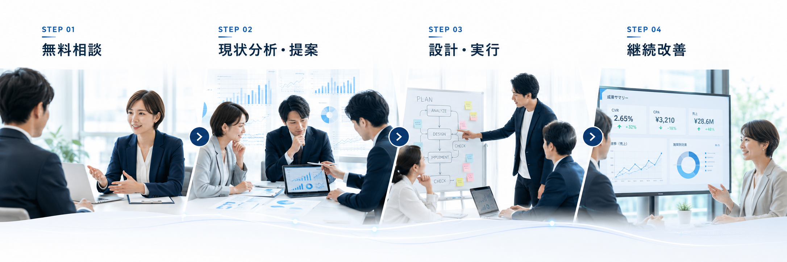
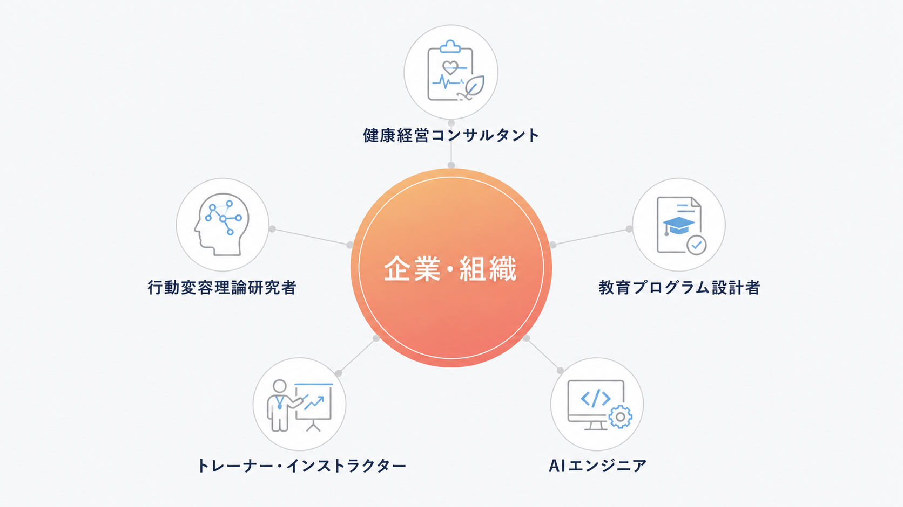

セミナーが一度きりで終わる
参加率は高くても翌月には元通り。継続する仕組みがなければ、施策は単発で終わり、投資対効果も見えにくくなります。
制度を入れて終わりにしない。
「担当者ひとりで抱え込む健康経営」から卒業し、
組織全体が自走する仕組みをつくります。
COMMON CHALLENGES
単発の施策では終わらず、社内に定着し、行動につながる仕組みまで設計することが求められています。
参加率は高くても翌月には元通り。継続する仕組みがなければ、施策は単発で終わり、投資対効果も見えにくくなります。
制度はあるのに従業員へ届かず、利用も進まない。活用されない施策は、経営層への説明も難しくなります。
離職や休職が増えるたびに、現場と人事の負担も大きくなります。根本原因に向き合わなければ、同じ問題が繰り返されます。
「効果が見えづらい」「予算が取りにくい」など、社内で意思決定を進めるための整理された説明材料が不足しがちです。
OUR APPROACH
初回相談は完全無料。「何から手をつければいいか分からない」という段階でも大丈夫です。

「何から始めればいいか分からない」「社内を動かしたいが材料がない」
そんな段階でも、一緒に整理するところから始めます。
健康 × 教育 × AI の各領域のプロが連携し、確実な実装を支えます。

施策の立案・実行・効果測定・経営層への説明——
その全てをFiTNESS UNIVERSITYが伴走します。
まずは現状をお聞かせください。提案・見積りは無料です。